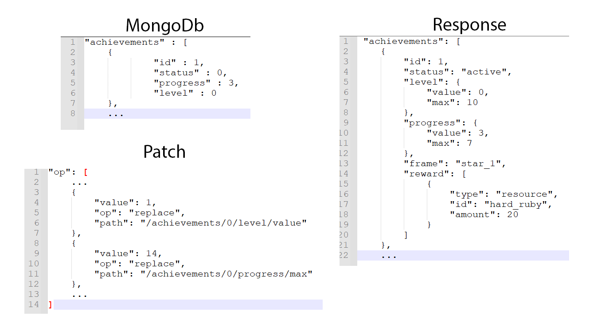
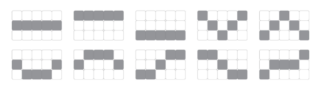
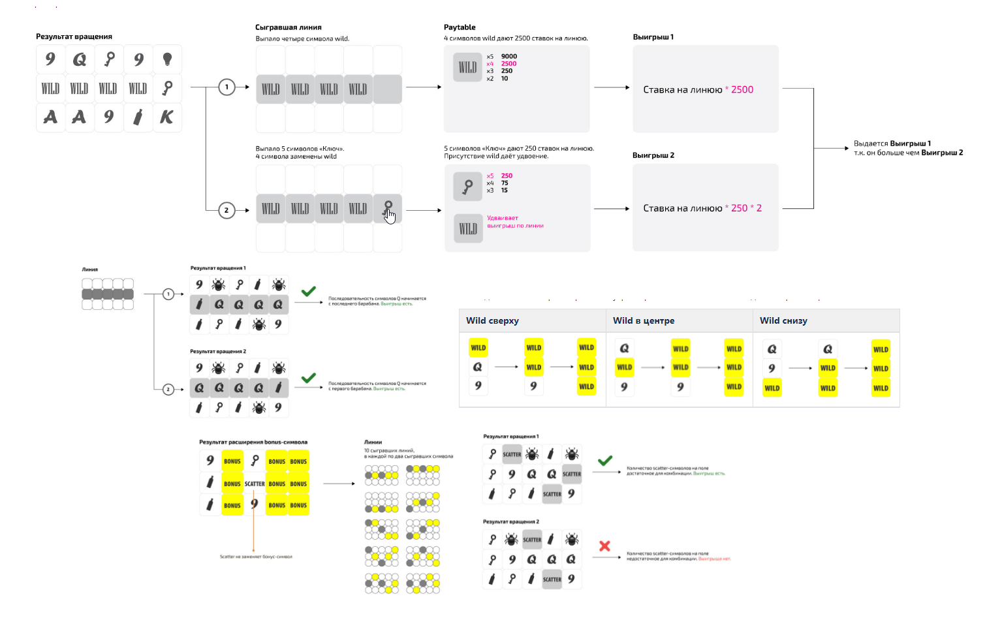

История
- [Релиз 23 декабря 2021] - [первый коммит 25 ноября 2019 года] = ~2 года
- Команда менялась и комплектовалась
- Перенос кода слотов внутрь PHP-приложения
Сегодняшний день
- https://ok.ru/game/mycasino (конечная цель - мобильные платформы)
- ~40к запросов в день (из них 30к спинов слота), всего ~7к юзеров, 300-350 сессий в день
- Команда - 2 парт-тайм бэкенд-инженера, 2 (+1) инженера на игровом клиенте, GD, продюсер, PM и много art-специалистов
- Еженедельные правки и релизы
Окружение для разработки
- ddev (https://github.com/drud/ddev)
- docker-compose.yml для автотестов
- Postman
- Личных приложений нет
Библиотеки
- Perf 1.5/casino
- DI-контейнер (https://php-di.org)
- middlewares (tuupola/cors-middleware), RequestHandlerInterface
- События (https://event.thephpleague.com/3.0)
- illuminate/collections
Архитектура. Инфраструктурный слой
- MVC, thin controllers, инъекция зависимостей
- MongoDB ODM
- Кэш https://www.php-cache.com
- interface vs implementation
Архитектура. Слой бизнес-логики
- DDD-like
- Механики и сущности
- Связность и события (команды)
Код
- PHP 8
- 45к строк (6к логических), 857 классов (224 пространства имен), 116 интерфейсов
- functional programming style
- final + dg/bypass-finals
Статический анализ кода
- Со старта проекта
- Арсенал - PHPStan, Phan, Psalm, PHP CS-Fixer, PHP Mess Detector, etc
- На уровне CI/CD пока нет
Игровой баланс
- Google-таблицы
- Парсер
- JSON-файл
- Лежит в репозитории PHP-приложения
Протокол
JSON Patch (IETF RFC 6902)

Формирование патча
- Сохраняем содержимое ответа game/init в MongoDb (строка ~100 Кб)
- В конце каждого запроса берем значение из базы, формируем новое и вычисляем разницу
- По разнице (diff) строим JSON Patch
- Пути оптимизации
Слот-машины. Ожидание

Слот-машины. Реальность

Слот-машины
- RTP - важный показатель (математика, наборы барабанов, проверка, подстройка)
- Кажущаяся простота реализации
- Бонусные игры
Автотесты
- Codeception
- unit tests (6к строк, 1к логических, 200 сценариев)
- API tests (11к строк, 2.2к логических, 290 сценариев)
- helpers (1.8к строк, 300 логических, 38 классов)
Качество автотестов
- Ответственность разработчика
- Не гарантируют отсутствие багов
- Кейс № 1 - максимальная стадия достижения
- Кейс № 2 - изменение набора доступных ставок
Деплой, инфраструктура
- Kubernetes
- Jenkins, автосборка для дев-окружений
- Процесс деплоя: клиент, сервер, тех. работы
- Версионирования нет
- Миграции MySQL и MongoDb
Прочее
- Админка
- Логи с клиента (https://client-logs.stark.games)
- Graylog
- Мониторинг - Monit, Pinba
- Профайлинг - Blackfire, LiveProf
Данные и их хранение
- MongoDb
- MySQL
- Redis
- Горизонтальное масштабирование
- Оплоги - Kafka, Clickhouse
Планы
- Два пакета правок, выход из песочницы
- Турниры (https://oss.redis.com/redistimeseries)
- Детальное изучение производительности (нагрузочное тестирование - k6.io)